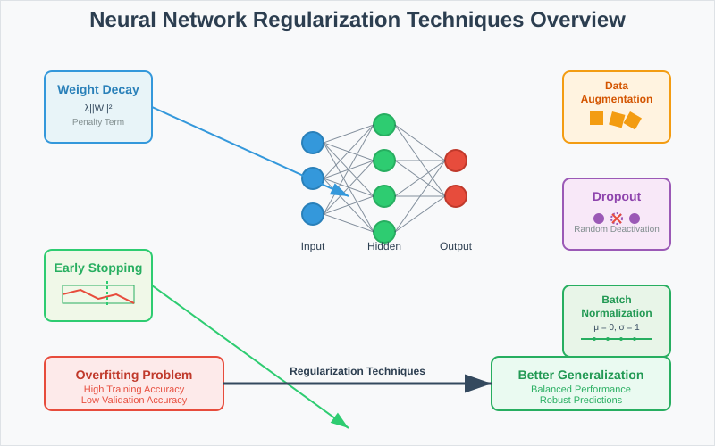
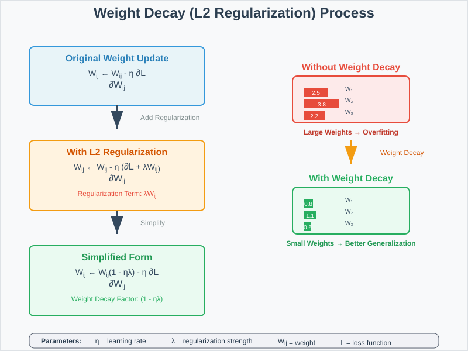
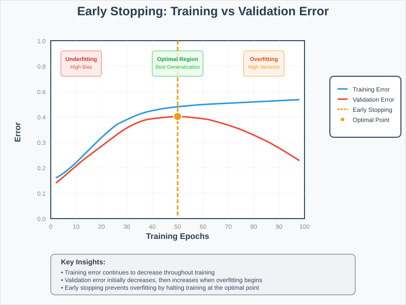
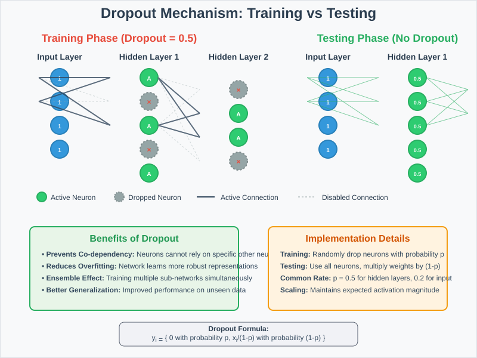
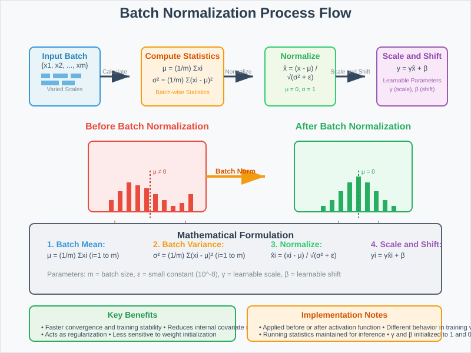

Neural Network Regularization Techniques
📋 Quick Navigation
- 📖 Introduction
- ⚖️ Weight Decay (L2 Regularization)
- ⏰ Early Stopping
- 🔄 Data Augmentation
- 🎯 Dropout
- 📊 Batch Normalization
- 📊 Comparison Table
- 💻 Implementation Examples
- 📚 References & Further Reading
📖 Introduction
Regularization is a fundamental technique used to overcome the overfitting problem that neural networks commonly encounter. When a neural network becomes too complex relative to the training data, it may memorize specific patterns in the training set rather than learning generalizable features, resulting in poor performance on unseen data.
This comprehensive guide covers five essential regularization techniques that help create more robust and generalizable neural networks:
- Weight Decay (L2 Regularization)
- Early Stopping
- Data Augmentation
- Dropout
- Batch Normalization

Key Benefits of Regularization:
- Prevents Overfitting: Reduces the gap between training and validation performance
- Improves Generalization: Helps models perform better on unseen data
- Increases Model Stability: Makes training more consistent and reliable
- Controls Model Complexity: Prevents the network from becoming unnecessarily complex
⚖️ Weight Decay (L2 Regularization)
Weight decay is a regularization technique that adds a penalty term to the loss function, encouraging the model to learn smaller weights. This results in a simpler model that is less prone to overfitting.
Mathematical Foundation
In standard gradient descent, weights are updated using:
With L2 regularization, we add a regularization term:
This simplifies to:
Where:
- \(\eta\) = learning rate
- \(\lambda\) = regularization parameter
- \((1 - \eta\lambda)\) = weight decay factor

How Weight Decay Works
Why Weight Decay Prevents Overfitting:
- Smaller Weights: The regularization term forces weights to remain small
- Simpler Models: Smaller weights lead to smoother decision boundaries
- Reduced Complexity: The model becomes less capable of memorizing training data
- Better Generalization: Simpler models typically perform better on unseen data
Implementation Considerations
Choosing the Regularization Parameter (\(\lambda\)):
- Too Small: Insufficient regularization, overfitting may still occur
- Too Large: Over-regularization, model may underfit
- Typical Range: 0.001 to 0.1, often tuned using validation data
- Adaptive Methods: Some optimizers automatically adjust regularization strength
⏰ Early Stopping
Early stopping is a regularization technique that monitors the model's performance on validation data and stops training when performance begins to degrade, preventing the model from overfitting to the training data.
Methodology
Early stopping works by:
- Data Splitting: Reserving part of training data as validation set
- Performance Monitoring: Tracking both training and validation metrics
- Stopping Criterion: Halting training when validation performance worsens
- Optimal Point Selection: Choosing the model state with best validation performance

Key Implementation Details
Training Process:
- Training Error: Continues to decrease throughout training
- Validation Error: Initially decreases, then starts increasing at the optimal stopping point
- Gap Monitoring: The difference between training and validation error indicates overfitting
- Patience Parameter: Number of epochs to wait before stopping after validation performance stops improving
Advantages:
- Simple to Implement: Requires minimal code changes
- Computational Efficiency: Reduces unnecessary training time
- Automatic Regularization: No hyperparameter tuning required
- Universal Applicability: Works with any neural network architecture
Best Practices:
- Validation Size: Typically 10-20% of training data
- Monitoring Frequency: Check validation performance every epoch
- Patience Setting: Usually 5-20 epochs depending on dataset size
- Model Checkpointing: Save best model state for final use
🔄 Data Augmentation
Data augmentation is a powerful regularization technique that artificially increases the size and diversity of the training dataset by creating modified versions of existing data points.
Core Principles
Primary Objectives:
- Increase Dataset Size: Generate more training samples from existing data
- Enhance Diversity: Introduce variations that the model might encounter in real-world scenarios
- Improve Robustness: Make the model invariant to common transformations
- Reduce Overfitting: Provide more examples for the model to learn from
Common Augmentation Techniques
For Image Data:
- Geometric Transformations: Rotation, scaling, translation, flipping
- Color Adjustments: Brightness, contrast, saturation modifications
- Noise Addition: Gaussian noise, salt-and-pepper noise
- Cropping: Random crops, center crops, multi-scale cropping
- Advanced Methods: Cutout, mixup, CutMix
For Text Data:
- Synonym Replacement: Substituting words with synonyms
- Random Insertion: Adding random words at random positions
- Random Deletion: Removing words randomly
- Sentence Shuffling: Reordering sentences in documents
For Audio Data:
- Time Stretching: Changing playback speed without altering pitch
- Pitch Shifting: Modifying pitch without changing tempo
- Noise Addition: Background noise injection
- Masking: Time and frequency masking
Benefits and Considerations
Advantages:
- Cost-Effective: Increases data without additional collection costs
- Domain-Specific: Can be tailored to specific problem requirements
- Significant Impact: Often provides substantial performance improvements
- Versatile: Applicable across different data modalities
Implementation Guidelines:
- Preserve Labels: Ensure augmentations don't change the ground truth
- Realistic Transformations: Apply only transformations that could occur naturally
- Balance: Avoid over-augmentation that might confuse the model
- Validation Split: Apply augmentation only to training data, not validation/test sets
🎯 Dropout
Dropout is a regularization technique that randomly sets a fraction of input neurons to zero during training, preventing the network from becoming overly dependent on specific neurons and reducing overfitting.
The Problem Dropout Solves
Co-dependency Issues in Fully Connected Layers:
- Parameter Concentration: Fully connected layers contain most of the network's parameters
- Neuron Dependencies: Neurons develop co-dependencies during training
- Reduced Individual Power: Each neuron's individual contribution becomes limited
- Overfitting Risk: Strong dependencies lead to memorization of training patterns
How Dropout Works
Training Phase:
- Random Selection: Each neuron has a probability \(p\) of being "dropped out"
- Zero Activation: Dropped neurons contribute zero to forward pass
- No Gradient Flow: Dropped neurons don't receive gradient updates
- Dynamic Network: Different neurons are active in each training iteration
Testing Phase:
- All Neurons Active: No neurons are dropped during inference
- Weight Scaling: All weights are multiplied by the keep probability \((1-p)\)
- Consistent Output: Ensures expected output magnitude matches training

Mathematical Formulation
During training, for each neuron \(i\) in layer \(l\):
During testing:
Implementation Details
Default Parameters:
- Dropout Rate: Typically 0.5 for hidden layers, 0.2 for input layers
- Layer Placement: Usually applied to fully connected layers
- Batch Consistency: Same dropout mask used for entire mini-batch
Best Practices:
- Rate Selection: Higher rates for layers with more parameters
- Architecture Considerations: Less dropout needed with batch normalization
- Task Dependency: Adjust rates based on dataset size and complexity
- Inference Mode: Always disable dropout during evaluation
📊 Batch Normalization
Batch Normalization is a technique that normalizes the inputs of each layer to have zero mean and unit variance, improving training stability and acting as a form of regularization.
Core Concept
Normalization Process:
For each mini-batch, Batch Normalization:
- Computes Statistics: Calculates mean and variance across the batch
- Normalizes Inputs: Transforms inputs to have zero mean and unit variance
- Applies Scaling: Uses learnable parameters to restore representational power
- Maintains Distribution: Keeps input distributions consistent across layers
Mathematical Foundation
For a mini-batch of size \(m\) with input \(x\):
Step 1: Calculate batch statistics
Step 2: Normalize
Step 3: Scale and shift
Where:
- \(\gamma\) and \(\beta\) are learnable parameters
- \(\epsilon\) is a small constant for numerical stability (typically \(10^{-8}\))

Implementation Positions
Two Common Placements:
- Before Activation: \(\text{Linear} \rightarrow \text{BatchNorm} \rightarrow \text{Activation}\)
- After Activation: \(\text{Linear} \rightarrow \text{Activation} \rightarrow \text{BatchNorm}\)
Current Best Practice: Before activation function is generally preferred
Benefits and Effects
Training Improvements:
- Faster Convergence: Allows higher learning rates and faster training
- Reduced Internal Covariate Shift: Stabilizes layer input distributions
- Gradient Flow: Improves gradient propagation through deep networks
- Less Sensitive to Initialization: Reduces dependence on careful weight initialization
Regularization Effects:
- Noise Introduction: Batch statistics introduce beneficial noise
- Implicit Regularization: Reduces overfitting without explicit penalty terms
- Reduced Dropout Dependency: Often reduces need for dropout
- Improved Generalization: Better performance on validation/test data
📊 Comparison Table
| Technique | Primary Benefit | Computational Cost | Implementation Difficulty | Best Use Cases |
|---|---|---|---|---|
| Weight Decay | Prevents large weights | Very Low | Easy | All network types, especially fully connected |
| Early Stopping | Automatic regularization | Low | Easy | Any architecture, limited training time |
| Data Augmentation | Increases dataset diversity | High | Moderate | Computer vision, NLP, audio processing |
| Dropout | Reduces neuron dependencies | Low | Easy | Fully connected layers, large networks |
| Batch Normalization | Training stability + regularization | Moderate | Moderate | Deep networks, convolutional architectures |
Technique Combinations
Common Combinations:
- Batch Norm + Weight Decay: Standard for modern CNN architectures
- Dropout + Early Stopping: Effective for fully connected networks
- Data Augmentation + All Others: Comprehensive regularization approach
- Batch Norm reduces Dropout need: BN often makes dropout less necessary
Selection Guidelines:
- Dataset Size: Small datasets benefit more from data augmentation
- Network Depth: Deep networks require batch normalization
- Architecture Type: CNNs benefit from different combinations than RNNs
- Computational Budget: Consider training time and resource constraints
💻 Implementation Examples
PyTorch Implementation

import torch
import torch.nn as nn
import torch.optim as optim
from torch.utils.data import DataLoader
import torchvision.transforms as transforms
class RegularizedNet(nn.Module):
def __init__(self, input_size, hidden_size, num_classes, dropout_rate=0.5):
super(RegularizedNet, self).__init__()
# Fully connected layers with batch normalization and dropout
self.fc1 = nn.Linear(input_size, hidden_size)
self.bn1 = nn.BatchNorm1d(hidden_size)
self.dropout1 = nn.Dropout(dropout_rate)
self.fc2 = nn.Linear(hidden_size, hidden_size)
self.bn2 = nn.BatchNorm1d(hidden_size)
self.dropout2 = nn.Dropout(dropout_rate)
self.fc3 = nn.Linear(hidden_size, num_classes)
self.relu = nn.ReLU()
def forward(self, x):
# First layer: Linear -> BatchNorm -> ReLU -> Dropout
out = self.fc1(x)
out = self.bn1(out)
out = self.relu(out)
out = self.dropout1(out)
# Second layer
out = self.fc2(out)
out = self.bn2(out)
out = self.relu(out)
out = self.dropout2(out)
# Output layer (no dropout)
out = self.fc3(out)
return out
# Training with multiple regularization techniques
def train_with_regularization(model, train_loader, val_loader, epochs=100):
# L2 regularization through weight_decay
optimizer = optim.Adam(model.parameters(), lr=0.001, weight_decay=1e-4)
criterion = nn.CrossEntropyLoss()
best_val_loss = float('inf')
patience = 10
patience_counter = 0
for epoch in range(epochs):
# Training phase
model.train()
train_loss = 0.0
for batch_idx, (data, target) in enumerate(train_loader):
optimizer.zero_grad()
output = model(data)
loss = criterion(output, target)
loss.backward()
optimizer.step()
train_loss += loss.item()
# Validation phase
model.eval()
val_loss = 0.0
with torch.no_grad():
for data, target in val_loader:
output = model(data)
loss = criterion(output, target)
val_loss += loss.item()
val_loss /= len(val_loader)
# Early stopping check
if val_loss < best_val_loss:
best_val_loss = val_loss
patience_counter = 0
# Save best model
torch.save(model.state_dict(), 'best_model.pth')
else:
patience_counter += 1
if patience_counter >= patience:
print(f"Early stopping at epoch {epoch}")
break
print(f'Epoch [{epoch+1}/{epochs}], Train Loss: {train_loss/len(train_loader):.4f}, Val Loss: {val_loss:.4f}')
# Data augmentation example
transform_train = transforms.Compose([
transforms.RandomHorizontalFlip(p=0.5),
transforms.RandomRotation(degrees=10),
transforms.ColorJitter(brightness=0.2, contrast=0.2, saturation=0.2, hue=0.1),
transforms.ToTensor(),
transforms.Normalize((0.485, 0.456, 0.406), (0.229, 0.224, 0.225))
])
transform_test = transforms.Compose([
transforms.ToTensor(),
transforms.Normalize((0.485, 0.456, 0.406), (0.229, 0.224, 0.225))
])
TensorFlow/Keras Implementation
import tensorflow as tf
from tensorflow.keras import layers, models, optimizers, callbacks
from tensorflow.keras.preprocessing.image import ImageDataGenerator
def create_regularized_model(input_shape, num_classes):
model = models.Sequential([
# Input layer with dropout
layers.Flatten(input_shape=input_shape),
layers.Dropout(0.2),
# Hidden layer 1
layers.Dense(512),
layers.BatchNormalization(),
layers.ReLU(),
layers.Dropout(0.5),
# Hidden layer 2
layers.Dense(256),
layers.BatchNormalization(),
layers.ReLU(),
layers.Dropout(0.5),
# Output layer
layers.Dense(num_classes, activation='softmax')
])
# Compile with L2 regularization
model.compile(
optimizer=optimizers.Adam(learning_rate=0.001),
loss='categorical_crossentropy',
metrics=['accuracy']
)
return model
# Training with regularization techniques
def train_model_with_regularization(model, x_train, y_train, x_val, y_val):
# Data augmentation
datagen = ImageDataGenerator(
rotation_range=20,
width_shift_range=0.2,
height_shift_range=0.2,
horizontal_flip=True,
zoom_range=0.2,
shear_range=0.2,
fill_mode='nearest'
)
# Early stopping callback
early_stopping = callbacks.EarlyStopping(
monitor='val_loss',
patience=10,
restore_best_weights=True
)
# Training
history = model.fit(
datagen.flow(x_train, y_train, batch_size=32),
epochs=100,
validation_data=(x_val, y_val),
callbacks=[early_stopping]
)
return history
📚 References & Further Reading
Research Papers
-
Dropout: A Simple Way to Prevent Neural Networks from Overfitting
Srivastava, N., Hinton, G., Krizhevsky, A., Sutskever, I., & Salakhutdinov, R. (2014)
arXiv:1207.0580 -
Batch Normalization: Accelerating Deep Network Training by Reducing Internal Covariate Shift
Ioffe, S., & Szegedy, C. (2015)
arXiv:1502.03167 -
Regularization of Neural Networks using DropConnect
Wan, L., Zeiler, M., Zhang, S., LeCun, Y., & Fergus, R. (2013)
arXiv:1207.5408 -
Improved Regularization of Convolutional Neural Networks with Cutout
DeVries, T., & Taylor, G. W. (2017)
arXiv:1708.04552
Comprehensive Resources
-
Deep Learning Book - Chapter 7: Regularization for Deep Learning
Ian Goodfellow, Yoshua Bengio, and Aaron Courville
Online Version -
Pattern Recognition and Machine Learning - Chapter 5: Neural Networks
Christopher M. Bishop
Comprehensive coverage of regularization techniques in neural networks
Practical Guides
-
PyTorch Tutorials: Regularization Techniques
Official PyTorch Documentation -
TensorFlow Guide: Better Performance with the tf.data API
TensorFlow Documentation
Includes data augmentation best practices
Hugging Face Models
- Pre-trained Models with Regularization: Hugging Face Model Hub
- Vision Models: timm library models - Extensively use batch normalization and other techniques
- Language Models: BERT and variants - Demonstrate dropout and other regularization
This documentation provides a comprehensive guide to neural network regularization techniques. For questions or contributions, please refer to the project repository.